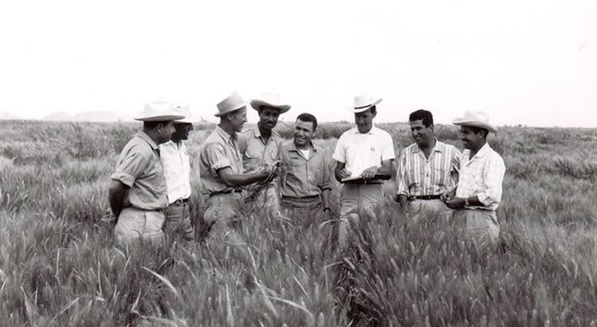

Dr Norman Borlaug
The man who a billion lives

Dr Norman Borlaug, third from the left, trains biologists in Mexico on how to increase wheat yields-part of his life-long war on hunger.
Here's a time line of Dr.Borlaug's life:
- 1914 - Born in Cresco,Iowa
- 1933 - leaves his family's farm to attend the University of Minnesota,thanks to a Description era program know as the"National Youth Administration"
- 1935 - Has to stop school and save up more money; work in the Civilan Conservation Corp, helping starving American. "I saw how food changed them", he said . " All of this left scars on me."
- 1937 - Finishes University and takes a job in the US Forestry Service
- 1938 - Marries wifes of 69 years Margret Gibson. Gets laid off due to bufget cuts. Inspired by Elvin Charles Stakman, he return to school study under Stakman, who teaches him about breeding pest -resistent plants.
- 1941 - Tries to enroll in the military after the Pearl Harbor attck, but is rejected. Instead, the military asked hids lab to work on waterproof glue, DDT to control malaria, disinfectants, and other applied
- 1942 - receives a ph.D in Genetics and Plant Pathology
- 1944 - Rejects a 100% salary increase from Dupont, leaves behing pregnant wife, and flies to Mexico tohead a new plant pathokogy program. Over the next 16 years, his team breeds 6,000 different strains of disease resistent wheat - including different varieties for each major climate on Earth
- 1945 - Discovers a way to grown wheat twice each season, doubling wheat yields
- 1953 - rosses a short, study dwarf breed of wheat with a high-yeidling American breed, creating a strain that rersponds well to fertilizer. It goes on to provide 95% of Mexico's wheat.
- 1962 - Visits Delhi and brings his high-yielding strains of wheat to the Indian subcontinent in time to help mitigate mass starvation due to a rapidly expanding population
- 1970 - receives the Nobel Peace Prize
- 1983 - helps serven African countries dramatically increase their maize and sorghum yields
- 1984 - becomes a distinguished professeur at Texas A&M University
- 2005 - states" well will have to double the world food supply by 2050." Argues that genetically modified crps are the only way we can meet the demand, as we run out of arabe land. Says that GM crops are not inherenly dangerous because"we've been genetically modifying plants and animals for a long time. Longbefore we called it science, people were selecting the best breeds."
- 2009 - dies at the age of 95.
"Borlaug's life and achievement are testimony to the far-reaching contribution that one man's towering intellect, persistence and scientific vision can make to human peace and progress"
_ _Indian Prime Minister Manmohan Singh
if you have time, you should read more about this incredible human being on his wikipedia entry.